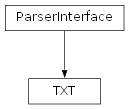

InputProcessing.Parsers package
Submodules
InputProcessing.Parsers.TXT module

- class InputProcessing.Parsers.TXT.TXT[source]
Bases :
ParserInterface- _abc_impl = <_abc._abc_data object>
- extensions = ['txt', '']
- parse(txt: str, name: str) RawDocument[source]
Méthode permettant le parsing d’un fichier d’un certain type, pour le préparer au traitement et à l’upload.
- Paramètres:
txt (str) – Le contenu brut du fichier
name (str) – le nom du document
- Lève:
NotImplementedError – si la fonction n’a pas été implémentée par la classe fille
- Renvoie:
le document, soit brut, soit déjà traité à un certain niveau
- Type renvoyé:
Any
Module contents
INFORMATIONS GENERALES
Cours de Python - M1 Sciences du Langage parcours Industries de la Langue Projet de fin de semestre
Ce package regroupe les parsers de fichiers d’entrée pour différents types comm texte brut, XML, CoNLL-U, etc.
INFORMATIONS SUR LE MODULE
- auteur:
Jérémy Bourdillat <Jeremy.Bourdillat@etu.univ-grenoble-alpes.fr>
- version:
1.0
Python ver. 3.11.1